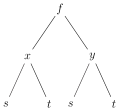
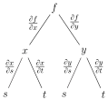

Section 2.4 The Chain Rule
You already routinely use the one dimensional chain rule
in doing computations like
In this example, \(f(x)=\sin(x)\) and \(x(t)=t^2\text{.}\)
We now generalize the chain rule to functions of more than one variable. For concreteness, we concentrate on the case in which all functions are functions of two variables. That is, we find the partial derivatives \(\pdiff{F}{s}\) and \(\pdiff{F}{t}\) of a function \(F(s,t)\) that is defined as a composition
We are using the name \(F\) for the new function \(F(s,t)\) as a reminder that it is closely related to, though not the same as, the function \(f(x,y)\text{.}\) The partial derivative \(\pdiff{F}{s}\) is the rate of change of \(F\) when \(s\) is varied with \(t\) held constant. When \(s\) is varied, both the \(x\)-argument, \(x(s,t)\text{,}\) and the \(y\)-argument, \(y(s,t)\text{,}\) in \(f\big(x(s,t)\,,\,y(s,t)\big)\) vary. Consequently, the chain rule for \(f\big(x(s,t)\,,\,y(s,t)\big)\) is a sum of two terms — one resulting from the variation of the \(x\)-argument and the other resulting from the variation of the \(y\)-argument.
Theorem 2.4.1. The Chain Rule.
Assume that all first order partial derivatives of \(f(x,y)\text{,}\) \(x(s,t)\) and \(y(s,t)\) exist and are continuous. Then the same is true for \(F(s,t)=f\big(x(s,t)\,,\,y(s,t)\big)\) and
We will give the proof of this theorem in §2.4.4, below. It is common to state this chain rule as
That is, it is common to suppress the function arguments. But you should make sure that you understand what the arguments are before doing so.
Theorem 2.4.1 is given for the case that \(F\) is the composition of a function of two variables, \(f(x,y)\text{,}\) with two functions, \(x(s,t)\) and \(y(s,t)\text{,}\) of two variables each. There is nothing magical about the number two. There are obvious variants for any numbers of variables. For example,
Equation 2.4.2.
If \(F(t) = f\big(x(t),y(t),z(t)\big)\text{,}\) then
and
Equation 2.4.3.
if \(F(s,t) = f\big(x(s,t)\big)\text{,}\) then
There will be a large number of examples shortly. First, here is a memory aid.
Subsection 2.4.1 Memory Aids for the Chain Rule
We recommend strongly that you use the following procedure, without leaving out any steps, the first couple of dozen times that you use the chain rule.
- Step 1: List explicitly all the functions involved and specify the arguments of each function. Ensure that all different functions have different names. Invent new names for some of the functions if necessary. In the case of the chain rule in Theorem 2.4.1, the list would be\begin{equation*} f(x,y)\qquad\qquad x(s,t)\qquad\qquad y(s,t)\qquad\qquad F(s,t)=f\big(x(s,t),y(s,t)\big) \end{equation*}While the functions \(f\) and \(F\) are closely related, they are not the same. One is a function of \(x\) and \(y\) while the other is a function of \(s\) and \(t\text{.}\)
-
Step 2: Write down the template
\begin{equation*} \pdiff{F}{s}=\frac{\partial f}{ }\frac{ }{\partial s} \end{equation*}Note that
- The function \(F\) appears once in the numerator on the left. The function \(f\text{,}\) from which \(F\) is constructed by a change of variables, appears once in the numerator on the right.
- The variable in the denominator on the left appears once in the denominator on the right.
- Step 3: Fill in the blanks with every variable that makes sense. In particular, since \(f\) is a function of \(x\) and \(y\text{,}\) it may only be differentiated with respect to \(x\) and \(y\text{.}\) So we add together two copies of our template — one for \(x\) and one for \(y\text{:}\)\begin{equation*} \pdiff{F}{s} =\pdiff{f}{x }\pdiff{x }{s} +\pdiff{f}{y }\pdiff{y }{s} \end{equation*}Note that \(x\) and \(y\) are functions of \(s\) so that the derivatives \(\pdiff{x }{s}\) and \(\pdiff{y }{s}\) make sense. The first term, \(\pdiff{f}{x }\pdiff{x }{s}\text{,}\) arises from the variation of \(x\) with respect to \(s\) and the second term, \(\pdiff{f}{y }\pdiff{y }{s}\text{,}\) arises from the variation of \(y\) with respect to \(s\text{.}\)
- Step 4: Put in the functional dependence explicitly. Fortunately, there is only one functional dependence that makes sense. The left hand side is a function of \(s\) and \(t\text{.}\) Hence the right hand side must also be a function of \(s\) and \(t\text{.}\) As \(f\) is a function of \(x\) and \(y\text{,}\) this is achieved by evaluating \(f\) at \(x=x(s,t)\) and \(y=y(s,t)\text{.}\)\begin{equation*} \pdiff{F}{s}(s,t)= \pdiff{f}{x}\big(x(s,t),y(s,t)\big) \pdiff{x}{s}(s,t) +\pdiff{f}{y}\big(x(s,t),y(s,t)\big) \pdiff{y}{s}(s,t) \end{equation*}If you fail to put in the arguments, or at least if you fail to remember what the arguments are, you may forget that \(\pdiff{f}{x}\) and \(\pdiff{f}{y}\) depend on \(s\) and \(t\text{.}\) Then, if you have to compute a second derivative of \(F\text{,}\) you will probably fail to differentiate the factors \(\pdiff{f}{x}\big(x(s,t),y(s,t)\big)\) and \(\pdiff{f}{y}\big(x(s,t),y(s,t)\big)\text{.}\)
To help remember the formulae of Theorem 2.4.1, it is sometimes also useful to pretend that our variables are physical quantities with \(f,F\) having units of grams, \(x,y\) having units of meters and \(s,t\) having units of seconds. Note that
- the left hand side, \(\pdiff{F}{s}\text{,}\) has units grams per second.
- Each term on the right hand side contains the partial derivative of \(f\) with respect to a different independent variable. That independent variable appears once in the denominator and once in the numerator, so that its units (in this case meters) cancel out. Thus both of the terms \(\pdiff{f}{x }\pdiff{x }{s}\) and \(\pdiff{f}{y }\pdiff{y }{s}\) on the right hand side also have the units grams per second.
- Hence both sides of the equation have the same units.
Here is a pictorial procedure that uses a tree diagram to help remember the chain rule \(\pdiff{}{s}f\big(x(s,t),y(s,t)\big)= \pdiff{f}{x} \pdiff{x}{s} +\pdiff{f}{y} \pdiff{y}{s} \text{.}\) As in the figure on the left below,
- write, on the top row, “\(f\)”.
- Write, on the middle row, each of the variables that the function \(f(x,y)\) depends on, namely“\(x\)” and “\(y\)”.
-
Write, on the bottom row,
- below \(x\text{,}\) each of the variables that the function \(x(s,t)\) depends on, namely “\(s\)” and “\(t\)”, and
- below \(y\text{,}\) each of the variables that the function \(y(s,t)\) depends on, namely “\(s\)” and “\(t\)”.
- Draw a line joining each function with each of the variables that it depends on.
-
Then, as in the figure on the right below, write beside each line, the partial derivative of the function at the top of the line with respect to the variable at the bottom of the line.
 -
Finally
- observe, from the figure below, that there are two paths from \(f\text{,}\) on the top, to \(s\text{,}\) on the bottom. One path goes from \(f\) at the top, through \(x\) in the middle to \(s\) at the bottom. The other path goes from \(f\) at the top, through \(y\) in the middle to \(s\) at the bottom.
- For each such path, multiply together the partial derivatives beside the lines of the path. In this example, the two products are \(\pdiff{f}{x}\,\pdiff{x}{s}\text{,}\) for the first path, and \(\pdiff{f}{y}\,\pdiff{y}{s}\text{,}\) for the second path.
- Then add together those products, giving, in this example, \(\pdiff{f}{x}\,\pdiff{x}{s}+\pdiff{f}{y}\,\pdiff{y}{s}\text{.}\)
- Put in the arguments, as in Step 4, above.
-
That's it. We have
\begin{align*} \pdiff{}{s}f\big(x(s,t),y(s,t)\big) &= \pdiff{f}{x}\big(x(s,t),y(s,t)\big) \pdiff{x}{s}(s,t)\\ &\hskip0.5in +\pdiff{f}{y}\big(x(s,t),y(s,t)\big) \pdiff{y}{s}(s,t) \end{align*}
Example 2.4.4.
The right hand side of the chain rule
of Equation 2.4.2, without arguments, is \(\pdiff{f}{x}\, \diff{x}{t} +\pdiff{f}{y}\, \diff{y}{t} +\pdiff{f}{z}\, \diff{z}{t}\text{.}\) The corresponding tree diagram is
Because \(x(t)\text{,}\) \(y(t)\) and \(z(t)\) are each functions of just one variable, the derivatives beside the lower lines in the tree are ordinary, rather than partial, derivatives.
Subsection 2.4.2 Chain Rule Examples
Let's do some routine examples first and work our way to some trickier ones.
Example 2.4.5. \(\pdiff{}{s}f\big(x(s,t),y(s,t)\big)\).
In this example we find \(\pdiff{}{s}f\big(x(s,t),y(s,t)\big)\) for
Define \(F(s,t)=f\big(x(s,t)\,,\,y(s,t)\big)\text{.}\) The appropriate chain rule for this example is the upper equation of Theorem 2.4.1.
For the given functions
so that
Example 2.4.6. \(\diff{}{t}f\big(x(t),y(t)\big)\).
In this example we find \(\diff{}{t}f\big(x(t),y(t)\big)\) for
Define \(F(t)=f\big(x(t),y(t)\big)\text{.}\) Since \(F(t)\) is a function of one variable its derivative is denoted \(\diff{F}{t}\) rather than \(\pdiff{F}{t}\text{.}\) The appropriate chain rule for this example (see 2.4.2) is
For the given functions
so that
Of course, in this example we can compute \(F(t)\) explicitly
and then differentiate
Example 2.4.7. \(\pdiff{}{t}f(x+ct)\).
Define \(u(x,t)=x+ct\) and \(w(x,t)=f(x+ct)=f\big(u(x,t)\big)\text{.}\) Then
Example 2.4.8. \(\frac{\partial^2}{\partial t^2}f(x+ct)\).
Define \(w(x,t)=f(x+ct)\) and \(W(x,t)=\pdiff{w}{t}(x,t)=cf'(x+ct)=F\big(u(x,t)\big)\) where \(F(u)=cf'(u)\) and \(u(x,t)=x+ct\text{.}\) Then
Example 2.4.9. Equation of state.
Suppose that we are told that \(F(P,V,T)=0\) and that we are to find \(\pdiff{P}{T}\text{.}\)
Before we can find \(\pdiff{P}{T}\text{,}\) we first have to decide what it means. This happens regularly in applications. In fact, this particular problem comes from thermodynamics. The variables \(P,\ V,\ T\) are the pressure, volume and temperature, respectively, of some gas. These three variables are not independent. They are related by an equation of state, here denoted \(F(P,V,T)=0\text{.}\) Given values for any two of \(P,\ V,\ T\text{,}\) the third can be found by solving \(F(P,V,T)=0\text{.}\) We are being asked to find \(\pdiff{P}{T}\text{.}\) This implicitly instructs us to treat \(P\text{,}\) in this problem, as the dependent variable. So a careful wording of this problem (which you will never encounter in the “real world”) would be the following. The function \(P(V,T)\) is defined by \(F\big(P(V,T),V,T)=0\text{.}\) Find \(\big(\pdiff{P}{T}\big)_V\text{.}\) That is, find the rate of change of pressure as the temperature is varied, while holding the volume fixed.
Since we are not told explicitly what \(F\) is, we cannot solve explicitly for \(P(V,T)\text{.}\) So, instead we differentiate both sides of
with respect to \(T\text{,}\) while holding \(V\) fixed. Think of the left hand side, \(F\big(P(V,T),V,T\big)\text{,}\) as being \(F\big(P(V,T),Q(V,T),R(V,T)\big)\) with \(Q(V,T)=V\) and \(R(V,T)=T\text{.}\) By the chain rule,
with \(F_j\) referring to the partial derivative of \(F\) with respect to its \(j^{\rm th}\) argument. Experienced chain rule users never introduce \(Q\) and \(R\text{.}\) Instead, they just write
Recalling that \(V\) and \(T\) are the independent variables and that, in computing \(\pdiff{}{T}\text{,}\) \(V\) is to be treated as a constant,
Now putting in the functional dependence
and solving
Example 2.4.10.
Suppose that \(f(x,y)=0\) and that we are to find \(\difftwo{y}{x}\text{.}\)
Once again, \(x\) and \(y\) are not independent variables. Given a value for either \(x\) or \(y\text{,}\) the other is determined by solving \(f(x,y)=0\text{.}\) Since we are asked to find \(\difftwo{y}{x}\text{,}\) it is \(y\) that is to be viewed as a function of \(x\text{,}\) rather than the other way around. So \(f(x,y)=0\) really means that, in this problem, \(f\big(x,y(x)\big)=0\) for all \(x\text{.}\) Differentiating both sides of this equation with respect to \(x\text{,}\)
Note that \(\diff{}{x}f\big(x,y(x)\big)\) is not the same as \(f_x\big(x,y(x)\big)\text{.}\) The former is, by definition, the rate of change with respect to \(x\) of \(g(x)=f\big(x,y(x)\big)\text{.}\) Precisely,
On the other hand, by definition,
The right hand sides of \((*)\) and \((**)\) are not the same. In \(\diff{g}{x}\text{,}\) as \(\De x\) varies the value of \(y\) that is substituted into the first \(f(\cdots)\) on the right hand side, namely \(y(x+\De x)\text{,}\) changes as \(\De x\) changes. That is, we are computing the rate of change of \(f\) along the (curved) path \(y=y(x)\text{.}\) In \((**)\text{,}\) the corresponding value of \(y\) is \(y(x)\) and is independent of \(\De x\text{.}\) That is, we are computing the rate of change of \(f\) along a horizontal straight line. As a concrete example, suppose that \(f(x,y)=x+y\text{.}\) Then, \(0=f\big(x\,,\,y(x)\big)=x+y(x)\) gives \(y(x)=-x\) so that
But \(f(x,y)=x+y\) implies that \(f_x(x,y)=1\) for all \(x\) and \(y\) so that
Now back to
by the quotient rule. Now it suffices to substitute in \(\diff{}{x}\big[f_x\big(x,y(x)\big)\big]\) and \(\diff{}{x}\big[f_y\big(x,y(x)\big)\big]\text{.}\) For the former apply the chain rule to \(h(x) = u\big(x,y(x)\big)\) with \(u(x,y)=f_x\big(x,y\big)\text{.}\)
Substituting this and
into the right hand side of \((\dagger)\) gives the final answer.
with all of \(f_x\text{,}\) \(f_y\text{,}\) \(f_{xx}\text{,}\) \(f_{xy}\text{,}\) \(f_{yy}\) having arguments \(\big(x\,,\,y(x)\big)\text{.}\)
We now move on to the proof of Theorem 2.4.1. To give you an idea of how the proof will go, we first review the proof of the familiar one dimensional chain rule.
Subsection 2.4.3 Review of the Proof of \(\diff{}{t}f\big(x(t)\big) = \diff{f}{x}\big(x(t)\big)\ \diff{x}{t}(t)\)
As a warm up, let's review the proof of the one dimensional chain rule
assuming that \(\diff{x}{t}\) exists and that \(\diff{f}{x}\) is continuous. We wish to find the derivative of \(F(t) = f\big(x(t)\big)\text{.}\) By definition
Notice that the numerator is the difference of \(f(x)\) evaluated at two nearby values of \(x\text{,}\) namely \(x_1=x(t+h)\) and \(x_0=x(t)\text{.}\) The mean value theorem is a good tool for studying the difference in the values of \(f(x)\) at two nearby points. Recall that the mean value theorem says that, for any given \(x_0\) and \(x_1\text{,}\) there exists an (in general unknown) \(c\) between them so that
For this proof, we choose \(x_0=x(t)\) and \(x_1=x(t+h)\text{.}\) The the mean value theorem tells us that there exists a \(c_h\) so that
We have put the subscript \(h\) on \(c_h\) to emphasise that \(c_h\text{,}\) which is between \(x_0=x(t)\) and \(x_1=x(t+h)\text{,}\) may depend on \(h\text{.}\) Now since \(c_h\) is trapped between \(x(t)\) and \(x(t+h)\) and since \(x(t+h)\rightarrow x(t)\) as \(h\rightarrow 0\text{,}\) we have that \(c_h\) must also tend to \(x(t)\) as \(h\rightarrow 0\text{.}\) Plugging this into the definition of \(F'(t)\text{,}\)
as desired.
Subsection 2.4.4 Proof of Theorem 2.4.1
We'll now prove the formula for \(\pdiff{}{s} f\big( x(s,t)\,,\,y(s,t)\big)\) that is given in Theorem 2.4.1. The proof uses the same ideas as the proof of the one variable chain rule, that we have just reviewed.
We wish to find the partial derivative with respect to \(s\) of \(F(s,t)=f\big(x(s,t)\,,\,y(s,t)\big)\text{.}\) By definition
The numerator is the difference of \(f(x,y)\) evaluated at two nearby values of \((x,y)\text{,}\) namely \((x_1,y_1)=\big(x(s+h,t)\,,\,y(s+h,t)\big)\) and \((x_0,y_0)=\big(x(s,t)\,,\,y(s,t)\big)\text{.}\) In going from \((x_0,y_0)\) to \((x_1,y_1)\text{,}\) both the \(x\) and \(y\)-coordinates change. By adding and subtracting we can separate the change in the \(x\)-coordinate from the change in the \(y\)-coordinate.
The first half, \(\big\{f(x_1,y_1) - f(x_0,y_1)\big\}\text{,}\) has the same \(y\) argument in both terms and so is the difference of the function of one variable \(g(x) = f(x,y_1)\) (viewing \(y_1\) just as a constant) evaluated at the two nearby values, \(x_0\text{,}\) \(x_1\text{,}\) of \(x\text{.}\) Consequently, we can make use of the mean value theorem as we did in §2.4.3 above. There is a \(c_{x,h}\) between \(x_0=x(s,t)\) and \(x_1=x(s+h,t)\) such that
We have introduced the two subscripts in \(c_{x,h}\) to remind ourselves that it may depend on \(h\) and that it lies between the two \(x\)-values \(x_0\) and \(x_1\text{.}\)
Similarly, the second half, \(\big\{f(x_0,y_1) - f(x_0,y_0)\big\}\text{,}\) is the difference of the function of one variable \(h(y) = f(x_0,y)\) (viewing \(x_0\) just as a constant) evaluated at the two nearby values, \(y_0\text{,}\) \(y_1\text{,}\) of \(y\text{.}\) So, by the mean value theorem,
for some (unknown) \(c_{y,h}\) between \(y_0=y(s,t)\) and \(y_1=y(s+h,t)\text{.}\) Again, the two subscripts in \(c_{y,h}\) remind ourselves that it may depend on \(h\) and that it lies between the two \(y\)-values \(y_0\) and \(y_1\text{.}\) So, noting that, as \(h\) tends to zero, \(c_{x,h}\text{,}\) which is trapped between \(x(s,t)\) and \(x(s+h,t)\text{,}\) must tend to \(x(s,t)\text{,}\) and \(c_{y,h}\text{,}\) which is trapped between \(y(s,t)\) and \(y(s+h,t)\text{,}\) must tend to \(y(s,t)\text{,}\)
We can of course follow the same procedure to evaluate the partial derivative with respect to \(t\text{.}\) This concludes the proof of Theorem 2.4.1.
Exercises 2.4.5 Exercises
Exercises — Stage 1
1.
Write out the chain rule for each of the following functions.
- \(\pdiff{h}{x}\) for \(h(x,y)=f\big(x,u(x,y)\big)\)
- \(\diff{h}{x}\) for \(h(x)=f\big(x,u(x),v(x)\big)\)
- \(\pdiff{h}{x}\) for \(h(x,y,z)=f\big(u(x,y,z),v(x,y),w(x)\big)\)
2.
A piece of the surface \(z=f(x,y)\) is shown below for some continuously differentiable function \(f(x,y)\text{.}\) The level curve \(f(x,y)=z_1\) is marked with a blue line. The three points \(P_0\text{,}\) \(P_1\text{,}\) and \(P_2\) lie on the surface.
On the level curve \(z=z_1\text{,}\) we can think of \(y\) as a function of \(x\text{.}\) Let \(w(x)=f(x,y(x))=z_1\text{.}\) We approximate, at \(P_0\text{,}\) \(f_x(x,y) \approx \frac{\Delta f}{\Delta x}\) and \(\frac{dw}{dx}(x)\approx\frac{\Delta w}{\Delta x}\text{.}\) Identify the quantities \(\Delta f\text{,}\) \(\Delta w\text{,}\) and \(\Delta x\) from the diagram.
3. ✳.
Let \(w=f(x,y,t)\) with \(x\) and \(y\) depending on \(t\text{.}\) Suppose that at some point \((x,y)\) and at some time \(t\text{,}\) the partial derivatives \(f_x\text{,}\) \(f_y\) and \(f_t\) are equal to \(2\text{,}\) \(-3\) and \(5\) respectively, while \(\diff{x}{t}=1\) and \(\diff{y}{t}=2\text{.}\) Find and explain the difference between \(\diff{w}{t}\) and \(f_t\text{.}\)
4.
Thermodynamics texts use the relationship
Explain the meaning of this equation and prove that it is true.
5.
What is wrong with the following argument? Suppose that \(w=f(x,y,z)\) and \(z=g(x,y)\text{.}\) By the chain rule,
Hence \(0=\pdiff{w}{z}\pdiff{z}{x}\) and so \(\pdiff{w}{z}=0\) or \(\pdiff{z}{x}=0\text{.}\)
Exercises — Stage 2
6.
Use two methods (one using the chain rule) to evaluate \(\pdiff{w}{s}\) and \(\pdiff{w}{t}\) given that the function \(w=x^2+y^2+z^2\text{,}\) with \(x=st,\ y=s\cos t\) and \(z=s\sin t\text{.}\)
7.
Evaluate \(\frac{\partial^3}{\partial x\partial y^2}f(2x+3y,xy)\) in terms of partial derivatives of \(f\text{.}\) You may assume that \(f\) is a smooth function so that the Chain Rule and Clairaut's Theorem on the equality of the mixed partial derivatives apply.
8.
Find all second order derivatives of \(g(s,t)=f(2s+3t,3s-2t)\text{.}\) You may assume that \(f(x,y)\) is a smooth function so that the Chain Rule and Clairaut's Theorem on the equality of the mixed partial derivatives apply.
9. ✳.
Assume that \(f(x,y)\) satisfies Laplace's equation \(\frac{\partial^2 f}{\partial x^2}+\frac{\partial^2 f}{\partial y^2}=0\text{.}\) Show that this is also the case for the composite function \(g(s,t) = f (s - t, s + t)\text{.}\) That is, show that \(\frac{\partial^2 g}{\partial s^2}+\frac{\partial^2 g}{\partial t^2}=0\text{.}\) You may assume that \(f(x,y)\) is a smooth function so that the Chain Rule and Clairaut's Theorem on the equality of the mixed partial derivatives apply.
10. ✳.
Let \(z = f(x,y)\) where \(x = 2s + t\) and \(y = s - t\text{.}\) Find the values of the constants \(a\text{,}\) \(b\) and \(c\) such that
You may assume that \(z = f(x,y)\) is a smooth function so that the Chain Rule and Clairaut's Theorem on the equality of the mixed partial derivatives apply.
11. ✳.
Let \(F\) be a function on \(\bbbr^2\text{.}\) Denote points in \(\bbbr^2\) by \((u, v)\) and the corresponding partial derivatives of \(F\) by \(F_u(u, v)\text{,}\) \(F_v (u, v)\text{,}\) \(F_{uu}(u, v)\text{,}\) \(F_{uv}(u, v)\text{,}\) etc.. Assume those derivatives are all continuous. Express
in terms of partial derivatives of the function \(F\text{.}\)
12. ✳.
\(u(x,y)\) is defined as
for an arbitrary function \(F(z)\text{.}\)
- If \(F(z) = \ln(z)\text{,}\) find \(\pdiff{u}{x}\) and \(\pdiff{u}{y}\text{.}\)
- For an arbitrary \(F(z)\) show that \(u(x,y)\) satisfies\begin{equation*} 2xy\pdiff{u}{x} + \pdiff{u}{y} = u \end{equation*}
13. ✳.
Let \(f(x)\) and \(g(x)\) be two functions of \(x\) satisfying \(f''(7) = -2\) and \(g''(-4) = -1\text{.}\) If \(z = h(s,t) = f(2s + 3t) + g(s - 6t)\) is a function of \(s\) and \(t\text{,}\) find the value of \(\frac{\partial^2 z}{\partial t^2}\) when \(s = 2\) and \(t = 1\text{.}\)
14. ✳.
Suppose that \(w = f (xz, yz)\text{,}\) where \(f\) is a differentiable function. Show that
15. ✳.
Suppose \(z = f (x, y)\) has continuous second order partial derivatives, and \(x = r \cos t\text{,}\) \(y = r \sin t\text{.}\) Express the following partial derivatives in terms \(r\text{,}\) \(t\text{,}\) and partial derivatives of \(f\text{.}\)
- \(\displaystyle \pdiff{z}{t}\)
- \(\displaystyle \frac{\partial^2 z}{\partial t^2}\)
16. ✳.
Let \(z = f(x, y)\text{,}\) where \(f(x, y)\) has continuous second-order partial derivatives, and
Find \(\difftwo{}{t} z\big(x(t),y(t)\big)\) when \(x(t)=2t^2\text{,}\) \(y(t)=t^3\) and \(t=1\text{.}\)
17. ✳.
Assume that the function \(F(x,y,z)\) satisfies the equation \(\frac{\partial F}{\partial z} = \frac{\partial^2 F}{\partial x^2} + \frac{\partial^2 F}{\partial y^2}\) and the mixed partial derivatives \(\frac{\partial^2 F}{\partial x \partial y}\) and \(\frac{\partial^2 F}{\partial y \partial x}\) are equal. Let \(A\) be some constant and let \(G(\gamma, s, t) = F (\gamma + s, \gamma-s, At)\text{.}\) Find the value of \(A\) such that \(\frac{\partial G}{\partial t} = \frac{\partial^2 G}{\partial \gamma^2} + \frac{\partial^2 G}{\partial s^2}\text{.}\)
18. ✳.
Let \(f(x)\) be a differentiable function, and suppose it is given that \(f'(0) = 10\text{.}\) Let \(g(s,t) = f (as - bt)\text{,}\) where \(a\) and \(b\) are constants. Evaluate \(\pdiff{g}{s}\) at the point \((s,t) = (b,a)\text{,}\) that is, find \(\pdiff{g}{s}\big|_{(b,a)}\text{.}\)
19. ✳.
Let \(f(u,v)\) be a differentiable function of two variables, and let \(z\) be a differentiable function of \(x\) and \(y\) defined implicitly by \(f(xz,yz) = 0\text{.}\) Show that
20. ✳.
Let \(w(s,t) = u(2s + 3t, 3s - 2t)\) for some twice differentiable function \(u = u(x, y)\text{.}\)
- Find \(w_{ss}\) in terms of \(u_{xx}\text{,}\) \(u_{xy}\) , and \(u_{yy}\text{.}\) You can assume that \(u_{xy} = u_{yx}\text{.}\)
- Suppose \(u_{xx} + u_{yy} = 0\text{.}\) For what constant \(A\) will \(w_{ss} = Aw_{tt}\text{?}\)
21. ✳.
Suppose that \(f(x,y)\) is twice differentiable (with \(f_{xy}=f_{yx}\)), and \(x=r\cos\theta\) and \(y=r\sin\theta\text{.}\)
- Evaluate \(f_\theta\text{,}\) \(f_r\) and \(f_{r\theta}\) in terms of \(r\text{,}\) \(\theta\) and partial derivatives of \(f\) with respect to \(x\) and \(y\text{.}\)
- Let \(g(x,y)\) be another function satisfying \(g_x=f_y\) and \(g_y=-f_x\text{.}\) Express \(f_r\) and \(f_\theta\) in terms of \(r\text{,}\) \(\theta\) and \(g_r\text{,}\) \(g_\theta\text{.}\)
22. ✳.
By definition, the gradient of the differentiable function \(f(x,y)\) at the point \(\big( x_0\,,\,y_0\big)\) is
Suppose that we know
Suppose also that
and
Assuming \(g(1,2)=3\text{,}\) \(h(1,2)=6\text{,}\) and \(z(s,t)=f\big(g(s,t),h(s,t)\big)\text{,}\) find
23. ✳.
- Let \(f\) be an arbitrary differentiable function defined on the entire real line. Show that the function \(w\) defined on the entire plane as\begin{equation*} w(x,y)=e^{-y}f(x-y) \end{equation*}satisfies the partial differential equation:\begin{equation*} w+\pdiff{w}{x}+\pdiff{w}{y}=0 \end{equation*}
- The equations \(x=u^3-3uv^2\text{,}\) \(y=3u^2v-v^3\) and \(z=u^2-v^2\) define \(z\) as a function of \(x\) and \(y\text{.}\) Determine \(\pdiff{z}{x}\) at the point \((u,v)=(2,1)\) which corresponds to the point \((x,y)=(2,11)\text{.}\)
24. ✳.
The equations
define \(x\) and \(y\) implicitly as functions of \(u\) and \(v\) (i.e. \(x=x(u,v)\text{,}\) and \(y=y(u,v)\)) near the point \((x,y)=(1,1)\) at which \((u,v)=\big(\frac{\pi}{2},0\big)\text{.}\)
- Find\begin{equation*} \pdiff{x}{u}\text{ and } \pdiff{y}{u} \end{equation*}at \((u,v)=\big(\frac{\pi}{2},0\big)\text{.}\)
- If \(z=x^4+y^4\text{,}\) determine \(\pdiff{z}{u}\) at the point \((u,v)=\big(\frac{\pi}{2},0\big)\text{.}\)
25. ✳.
Let \(f(u,v)\) be a differentiable function, and let \(u=x+y\) and \(v=x-y\text{.}\) Find a constant, \(\al\text{,}\) such that
Exercises — Stage 3
26.
The wave equation
arises in many models involving wave-like phenomena. Let \(u(x,t)\) and \(v(\xi,\eta)\) be related by the change of variables
- Show that \(\ \frac{\partial^2u}{\partial x^2} -\frac{1}{c^2}\frac{\partial^2u}{\partial t^2} =0\ \) if and only if \(\ \frac{\partial^2 v}{\partial\xi\partial\eta}=0\text{.}\)
- Show that \(\ \frac{\partial^2u}{\partial x^2} -\frac{1}{c^2}\frac{\partial^2u}{\partial t^2} =0\ \) if and only if \(\ u(x,t)=F(x-ct)+G(x+ct)\ \) for some functions \(F\) and \(G\text{.}\)
- Interpret \(\ F(x-ct)+G(x+ct)\ \) in terms of travelling waves. Think of \(u(x,t)\) as the height, at position \(x\) and time \(t\text{,}\) of a wave that is travelling along the \(x\)-axis.
Remark: Don't be thrown by the strange symbols \(\xi\) and \(\eta\text{.}\) They are just two harmless letters from the Greek alphabet, called “xi” and “eta” respectively.
27.
Evaluate
- \(\pdiff{y}{z}\) if \(e^{yz}-x^2 z \ln y = \pi\)
- \(\diff{y}{x}\) if \(F(x,y,x^2-y^2)=0\)
- \(\left(\pdiff{y}{x}\right)_u\) if \(xyuv=1\) and \(x+y+u+v=0\)